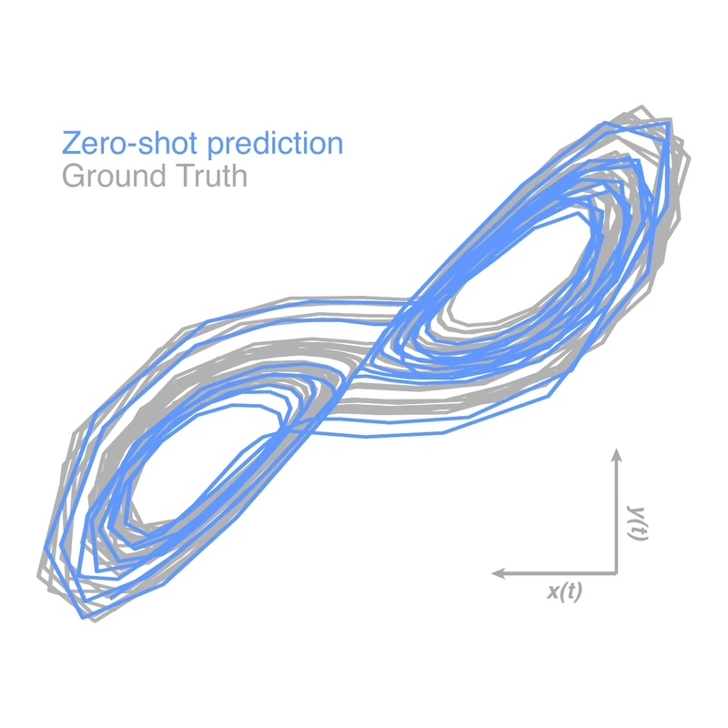
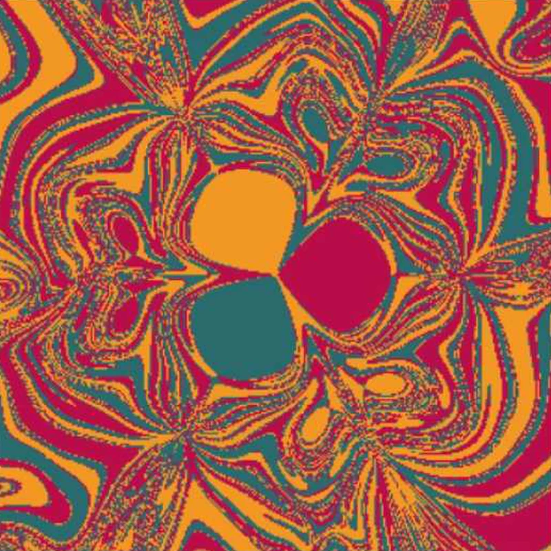
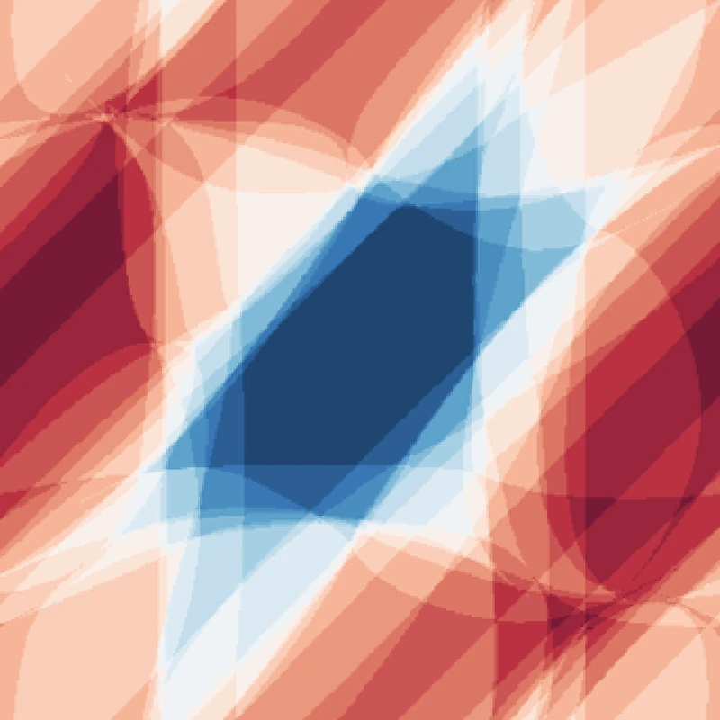

The dynamics of learning,
and the learning of dynamics.
A research group led by Yuanzhao Zhang, working at the interfaces between nonlinear dynamics, networks, and artificial intelligence.
A research group led by Yuanzhao Zhang, working at the interfaces between nonlinear dynamics, networks, and artificial intelligence.

Context parroting on the Lorenz system · ICLR 2026

Two nearby releases of a magnetic pendulum · Chaos 2025

Basin of a twisted state in a Kuramoto ring · PRL 2021